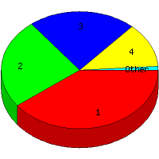

Week of 11/8/2009 to 11/14/2009: Top
5 of
5 File Types (Extensions)
Sorted by Access Count
Individual file types as determined by file extensions. All URLs that
do not contain an extension are counted as directories.

| Rank |
Type |
Accesses |
% |
Bytes |
% |
| 1 |
htm
|
45 |
39.82 |
140,788 |
9.29 |
| 2 |
Directory (folder)
|
28 |
24.78 |
70,875 |
4.68 |
| 3 |
jpg
|
25 |
22.12 |
1,081,657 |
71.38 |
| 4 |
gif
|
14 |
12.39 |
221,872 |
14.64 |
| 5 |
css
|
1 |
0.88 |
260 |
0.02 |